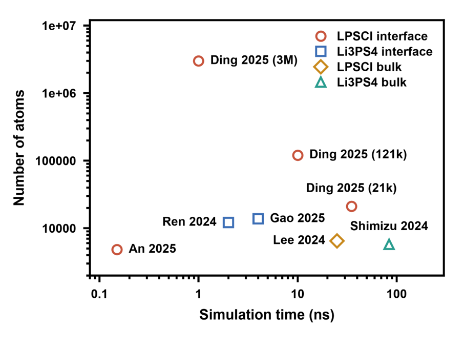
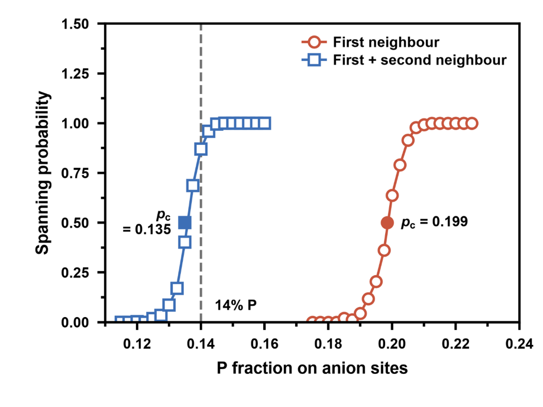
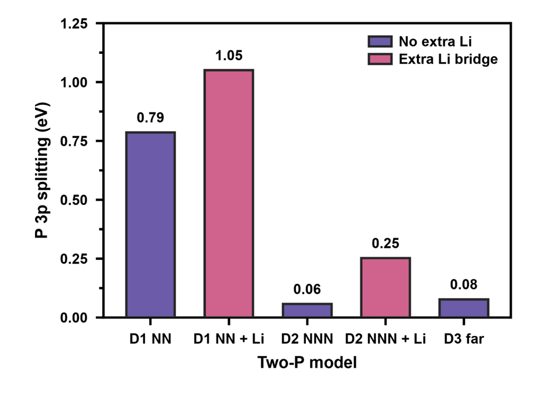
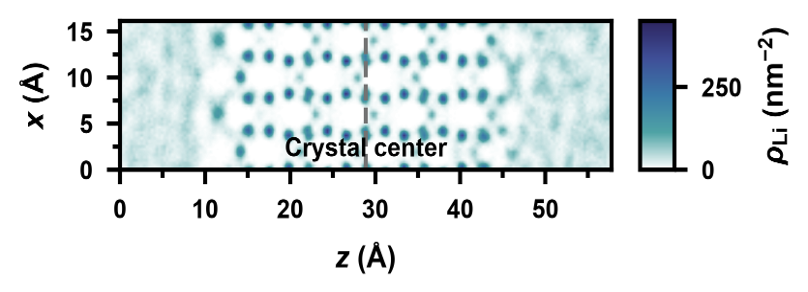
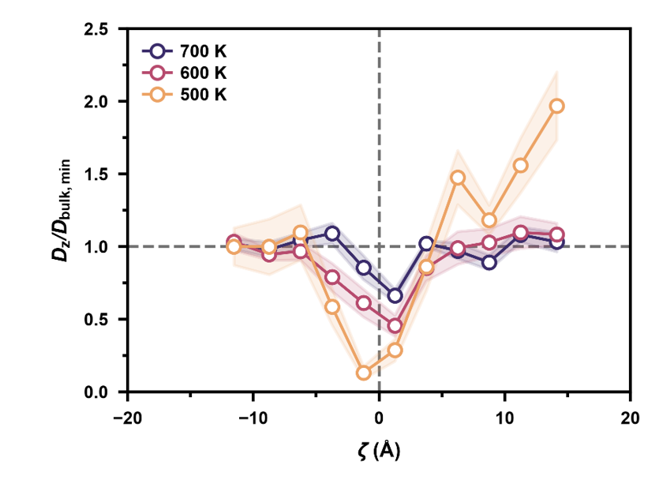

Stormy-drawing绘图skill已发布
个人绘图skill已经发布，创作者：
- Storm Talia
- Opus 5.5
- Sonnet 5.5
创作动机来源于对绘图的苦恼，受够了Origin卡顿的操作，再加上本人也菜（主要原因😂），索性转向使用python绘图。目前agent大爆发，很容易创作skill，本人也没有找到满意的绘图的skill，遂开发自己的个人绘图skill。主要是为了代替origin，设计重点包括坐标轴、字体（默认使用Arial，Linux上需要上传字体）、画布等，仓库在：
效果见下图：





python个人习惯是用
uv管理（如果你只用python的话其实完全没必要是用miniconda甚至anaconda，可以使用uv等轻量化、现代化的包管理器），在Windows上使用需要允许是用PowerShell脚本。模型推荐是用有多模态的，原生agent推荐：
- Codex
- dsh web或者dsh-tui
- antigravity
当然转接也行，有多模态能力可能方便测试调整。
本博客所有文章除特别声明外，均采用 CC BY-NC-SA 4.0 许可协议。转载请注明来源 Storm's Storehouse！
相关推荐

2025-02-27
AMD显卡畅玩本地大模型
PS：很久之前写的一篇体验文章啦~ 测试一下hexo的博客功能~ ¶为什么选择AMD 因为穷（bushi✘），广大的DIY玩家因为各种各样的原因选择了AMD显卡，让我们相聚于此。AMD显卡相较于NVDIA以其高性价比著称，奈何NVDIA早已建立起CUDA的壁垒，AMD显卡在人工智能领域“有劲使不出”或者算力较NV差。几个月前，Ollama支持了部分AMD Radeon显卡以及AMD Radeon Pro显卡，让广大玩家有了尝鲜的机会，接下来咱们展开说说 ¶什么是Ollama “畅玩”之前，咱先把简单的原理搞清楚。 Ollama gihtub：https://github.com/ollama/ollama Ollama官网：https://ollama.com/（可正常访问） 什么是Ollama？ ——Get up and running with large language models. Ollama是一个调用和运行大模型的工具，可以是官方提供的大模型，也可以是非官方提供的途径，非Ollama官方提供的大模型可以前往Huggingface和魔搭社区（可正常访问）下载。 几个...

2025-09-01
第二弹——能量密度的估算
SEI膜的结构 锂离子电池工作电位范围为2～4.3V。其中，石墨类负极工作电位范围在0～1.0V（vs.Li+/Li），正极工作电位范围一般在2.5～ 4.3V（vs.Li+/Li）。而目前商用电解液不发生氧化还原反应的电化学窗口一般为1.2～3.7V（vs.Li+/Li）。因此，在负极侧，当负极点位 <1.2 V时会生成SEI固态电解质中间相，类似的在正极侧会生成CEI结构。 从机理来看，当负极的Fermi能级高于电解质的LUMO时，电子容易从Fermi能级转移到LUMO轨道，即发生氧化还原反应形成SEI界面 如果电极材料的充放电电位范围较窄，例如负极的嵌锂电位高于1.2V（ vs.Li+/Li ） ， 正极的脱锂电位低于 3.5V（vs.Li+/Li），则正负极表面可以不发生电解质的氧化还原反应，不会形成SEI膜。 SEI界相的厚度可能需要>2 nm以防止电子隧穿效应，<50 nm来确保离子能够顺利传输。它的结构如下图所示： SEI膜的成分和结构通常认为是靠近电极材料的为无机物层，对于锂离子电池，主要包含 #mjx-8...

2026-05-09
玩转人声
使用的显卡是前几天99捡的P104-100 8GB，亮机卡是AMD R9 270，通过cockpit和ssh访问。CUDA版本如下： 1234567891011121314151617181920212223storm@gentoo ~/HDD $ nvidia-smiTue Apr 28 03:16:41 2026 +-----------------------------------------------------------------------------------------+| NVIDIA-SMI 580.126.18 Driver Version: 580.126.18 CUDA Version: 13.0 |+-----------------------------------------+------------------------+----------------------+| GPU Name Persistence-M | Bus-Id ...
%E7%9A%84%E5%8D%95%E7%82%B9%E8%AE%A1%E7%AE%97/cover.png)
2025-04-23
Cu(111) slab模型的单点计算
首先对Cu单胞进行结构优化（bulk计算），然后使用优化的结构进行切割，再进行计算（由于晶胞已经优化过，所以本次计算其实是单点计算）。大师兄提到： Cu(111) slab 模型（POSCAR）的制作流程（复习一下）。**注意：**前面我们用的是Conventional cell，下面用的是Primitive Cell。 一般来说用Conventional cell， FCC的金属可以用Primitive Cell 但对于其他体系，通过Primitive Cell切出来表面模型有问题 我准备两种都验证一下。 ¶使用Conventional Cell建立slab模型 ¶切割结构 将bulk计算完毕的CONTCAR文件用Vesta打开，再转换为.cif文件使用Materials Studio打开 Step1：Build-Surface-Cleave Surface Angstrom是单位埃，需要切割的晶面是(111)，相应的平面方程为 #mjx-3e2096b{ display:contents; mjx-a...

2026-09-07
20260907复现
需要分析的结构是 #mjx-8c9dff3{ display:contents; mjx-assistive-mml { user-select: text !important; clip: auto !important; color: rgba(0,0,0,0); } mjx-container[jax="SVG"] { direction: ltr; } mjx-container[jax="SVG"] > svg { overflow: visible; min-height: 1px; min-width: 1px; } mjx-container[jax="SVG"] > svg a { fill: blue; stroke: blue; } mjx-assistive-mml { position: absolute !important; top: 0px; l...

2026-06-21
初识Lammps
组里面偏向于固体材料这边，所以经典MD用的是Lammps而不是Gromacs（我猜的😢） 这还是第一次接触Lammps，记录一下。 ¶Lammps的编译安装 首先是软件安装这块。依旧是编译安装，有张破烂P104显卡就编译GPU版本了，这破烂GPU的PCIE带宽很低，双精度极弱，所以采用GPU Package的方案而不是KOKKOS。 参考的博文随便找了一篇：https://pa.ci/417.html 嘿，那个博主的硬件是GTX 1060，和P104的核心正好是Pascal架构的同一代的。 进行配置： 1234567891011121314151617181920212223cmake ../cmake \ -D CMAKE_BUILD_TYPE=Release \ -D CMAKE_INSTALL_PREFIX=/home/storm/apps/lammps_installation \ -D BUILD_SHARED_LIBS=on \ -D LAMMPS_EXCEPTIONS=on \ -D FFT=FFTW3 \ -D BUILD_MPI=on -D BUI...
评论